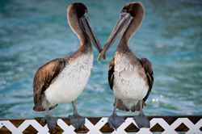

History | Where we are today | where We are Going |

In the Beginning ... Utah Backyard Birds began with a bird lover who took way too many pictures. Bart Jones started out as a backyard bird watcher. He was an artist and photographer and birds were one of his favorite subjects. Many of the birds also captured in watercolors, usually with some tree or flowers in the background. Bart would set out many different kinds of feed to attract as many bird varieties as possible. Soon his backyard in Eureka became an aviary and the expense of keeping all his feathered visitors fed was impacting his pocketbook.
After developing hundreds of bird photos and creating about a hundred watercolors, Bart decided to see how he could translate his passion for these feathered friends into a money making venture. He decided to try to create a calendar and associated postcard book and sell them to those who would enjoy the local wildlife.
Utah Backyard Birds began as a company in 1997. Bart Jones compiled a wide variety of his best and most unique bird photos into a calendar and postcard book series. His product line is available through this website and also can be found in Nature Lovers stores countrywide. Each month of the calendar contains interesting information about the bird variety depicted for that month.

Not only does Bart just capture these birds, but he has also researched their behaviors, migration patterns and is a reservoir of information about local Utah birds. He felt that he could share this knowledge with others as well as his wonderful still life photographs and artwork.
Some of the many varieties of birds that appear in the calendars of Bart Jones include:
| Bird | Month | Year |
|---|---|---|
| Rofous Hummingbirds | Janury | 2014 |
| Great Blue Herons | February | 2014 |
| Amarican Bald Eagles | June | 2014 |
| Baltimore Orioles | December | 2014 |
| California Seagulls | March | 2015 |
| Lazuli Buntings | April | 2015 |
While Utah Backyard Birds is still a young company, the artwork and photographic creations of Bart Jones have received much adulation from art critics as well as the public. Many customers are repeat buyers year after year. Visitors to Utah can purchase the postcard books at local bookstores, the Salt Lake Airport and also at local grocery stores. Bart Jones has big plans for the future of the company. He would soon like to branch out into sharing his images of insects and arachnids (spiders). Some of his macro-photography is truly inspiring.
Press Releases Arizona Byways, December 30, 2012:
"Utah Backyard Birds is a wonderful calendar that captures local birds in a creative and artistic light. The wide variety of species that frequently visit Utah will amaze you." Birds of a Feather Magazine, August 18, 2011:
"Hummingbirds, eagles, great horned owls and quail have one thing in common, you might see them in Bart Jones' backyard. This skilled nature photographer and artist shares these delightful images with us in both calendar and postcard book format. For those of us who do not have the patience or skill to photograph wildlife, we can enjoy these feathered friends through the talents of Bart Jones."